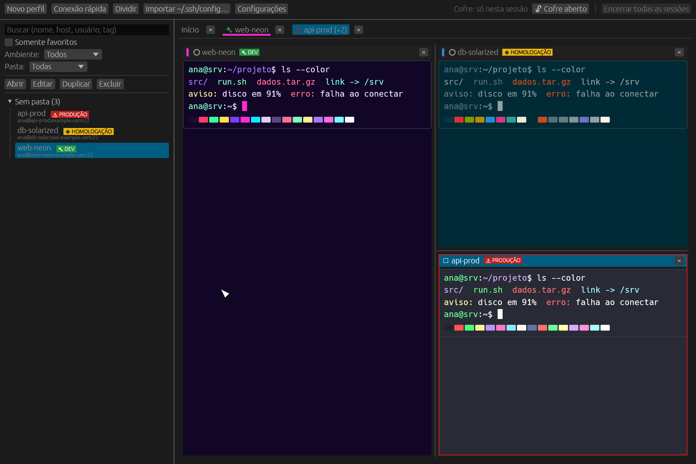
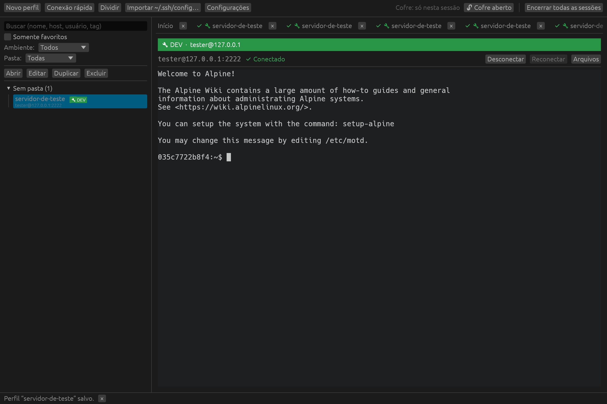
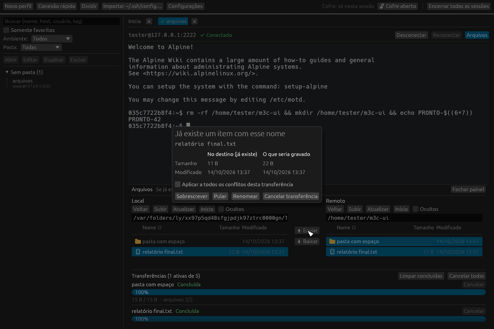
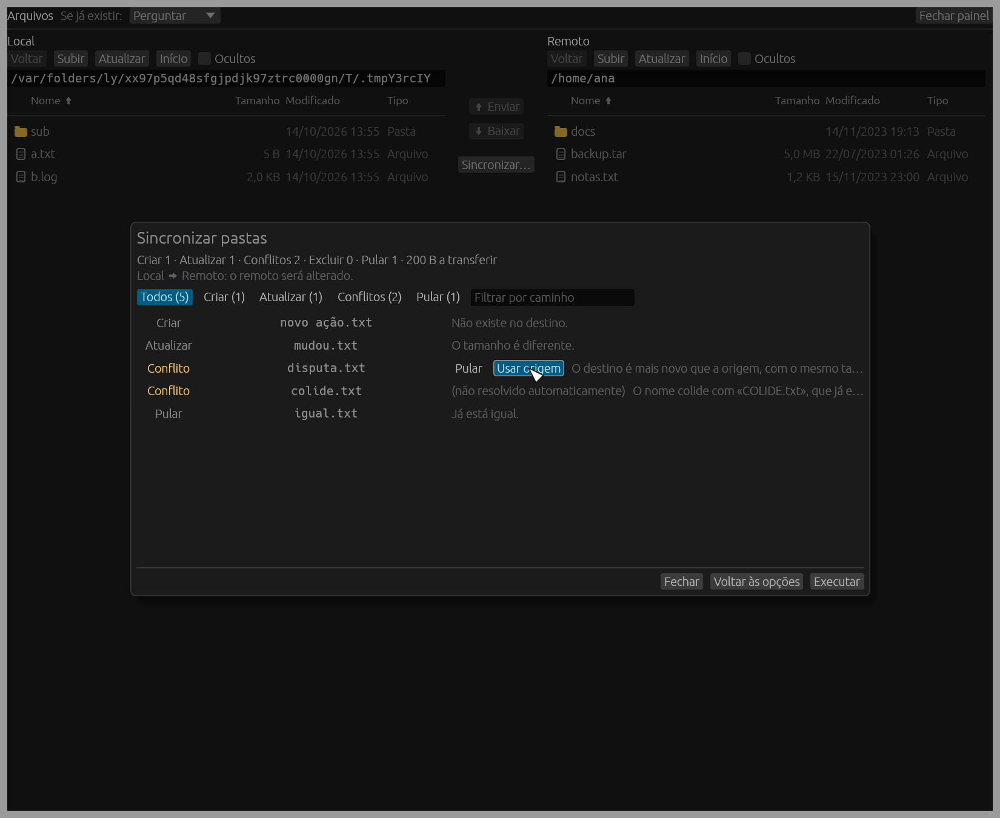

Perfiles organizados
Carpetas, etiquetas, favoritos y entornos DEV / PREPRODUCCIÓN / PRODUCCIÓN con franja de aviso. Conexión rápida sin guardar nada.
Perfiles, pestañas, paneles divididos, SFTP y sincronización de carpetas en una app nativa y rápida, escrita en Rust. Las contraseñas van a la bóveda del sistema, las claves de host se verifican con rigor y no hay telemetría.
macOS · Linux · Windows

Carpetas, etiquetas, favoritos y entornos DEV / PREPRODUCCIÓN / PRODUCCIÓN con franja de aviso. Conexión rápida sin guardar nada.
Contraseña, clave privada con o sin passphrase, agente SSH y keyboard-interactive / MFA, también a través de jump hosts.
Keychain, Credential Manager o Secret Service. Nada en texto plano en el disco, en los logs ni en los argumentos de procesos.
Aceptar una vez o aceptar y guardar. Una clave cambiada bloquea la conexión antes de enviar nada.
Terminal nativo (alacritty_terminal) con tema por perfil, seis paletas y confirmación al pegar varias líneas.
Local y remoto lado a lado, cola de transferencias, gestión de conflictos, cancelación y reanudación de archivos grandes.
Sincronización unidireccional que muestra cada cambio antes de ejecutarlo. Eliminaciones desactivadas por defecto y modo espejo protegido.
Sin telemetría ni comprobación de actualizaciones: el único tráfico de red son las conexiones que inicias. Interfaz en inglés, portugués y español.



Las capturas usan datos ficticios de un servidor de pruebas local.
Paquetes listos de la última versión. Todavía no están firmados, así que el sistema avisará la primera vez.
App sin firmar: la primera vez, haz clic derecho sobre ella y elige Abrir.
Probado en Ubuntu 24.04 (Wayland).
Todavía no hay paquete para esta versión. Compílalo desde el código fuente (abajo).
Todavía no validado en Windows.
mySSH es software libre, con licencia doble MIT o Apache-2.0. Descarga el código de esta versión o clona el repositorio.
Requiere Rust estable (edición 2024). En Debian/Ubuntu, instala antes las bibliotecas de ventana y GPU con make deps-linux.
git clone https://github.com/xandroalmeida/mySSH.git
cd mySSH
cargo run -p myssh-app --releasemySSH es un cliente SSH y gestor de sesiones para escritorio, gratuito y de código abierto, para macOS, Linux y Windows, escrito en Rust. Reúne perfiles de conexión guardados, un terminal con pestañas y paneles divididos, un panel de archivos SFTP y sincronización unidireccional de carpetas en una sola app nativa.
Sí. mySSH es software libre, con licencia doble MIT o Apache-2.0. No hay edición de pago, cuenta ni suscripción.
En la bóveda de credenciales del sistema operativo: Keychain en macOS, Credential Manager en Windows y Secret Service en Linux. Los secretos nunca se escriben en texto plano en el disco, en los logs ni en los argumentos de procesos.
Sí. Inicia sesión con contraseña, clave privada (con o sin passphrase), el agente SSH o keyboard-interactive, incluidos códigos MFA de un solo uso, también a través de jump hosts (bastiones).
No. No hay telemetría, cuenta ni comprobación automática de actualizaciones. Las únicas conexiones de red son las sesiones SSH y SFTP que abres.
Sí. mySSH cubre el mismo trabajo diario, sesiones de terminal, hosts guardados y transferencia de archivos, como una app nativa de código abierto que mantiene todos los datos en tu ordenador, sin servicios en la nube.